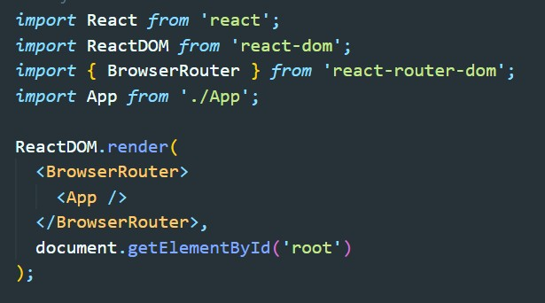
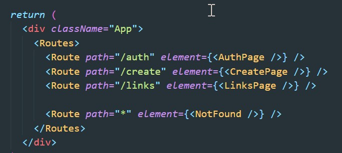
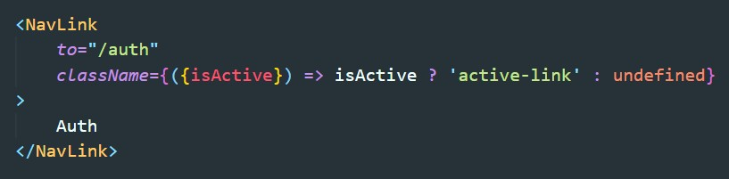
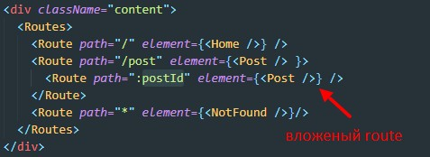
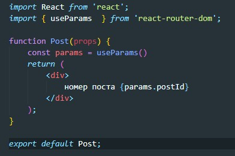
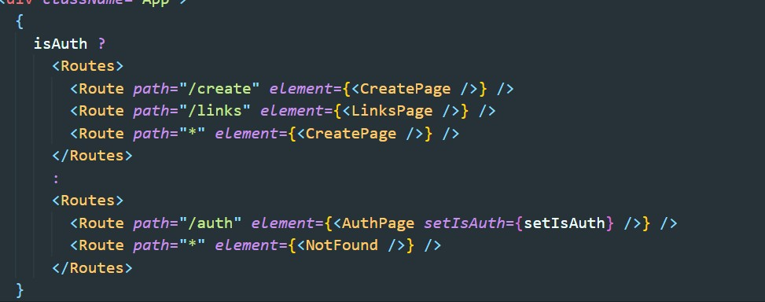
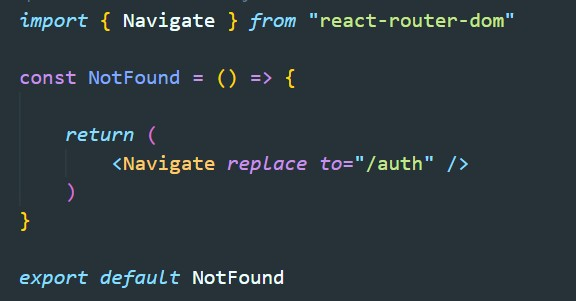

Установка библиотеки
npm i react-router-domЧто бы роутинг работал, нам необходимо обернуть все наше приложение в провайдер от библиотеки. Для этого в файле index.js отобрачиваем App компонент в компонент BrowserRouter
Routes - в этот компонент мы оборачиваем наши роуты
Route - непосредственно маршрут. У этого компонент есть следующие атрибуты:
Если в качестве path указать * (звездочку) то этот роут будет срабатывать всегда когда для текущего URL не нашлось роута.
Link - ссылка которая переключает роуты без перезагрузки страницы. Что бы указать путь куда переведет ссылка нам необходимо использовать атрибут to
NavLink - делает абсолютно тоже самое что и компонент Link с той только разницей что при активном роуте ссылке добавляется класс active. Если мы хотим указать свой активный класс, то мы можем использовать callBack в атрибуте className
Для того что бы создать динамическую маршрутизацию нужжно создать вложенную маршрутизацию. Затем в компоненте которая будет отрисовываться мы из react-router-dom импортируем useParams. Затем получаем объект из вызова useParams. Этот объект будет содержать ID из URL
Получение posrId из useParams
Допустим нам надо редиректить неавторизованного пользователя на страницу авторизации, для этого мы будем использовать компонент Navigate
 